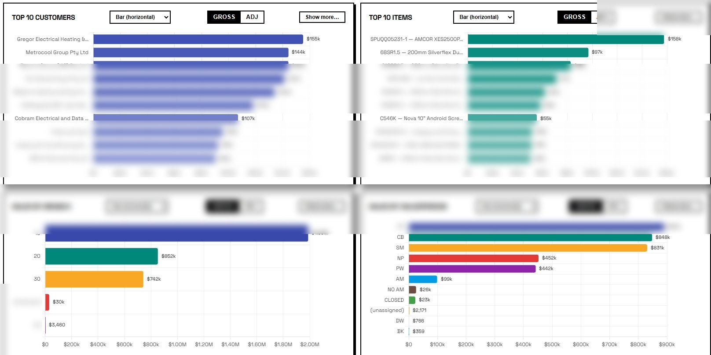
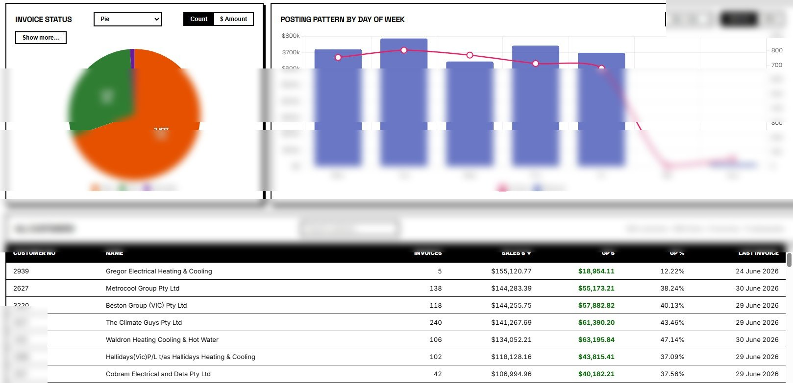
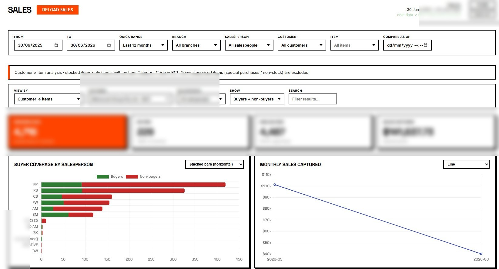
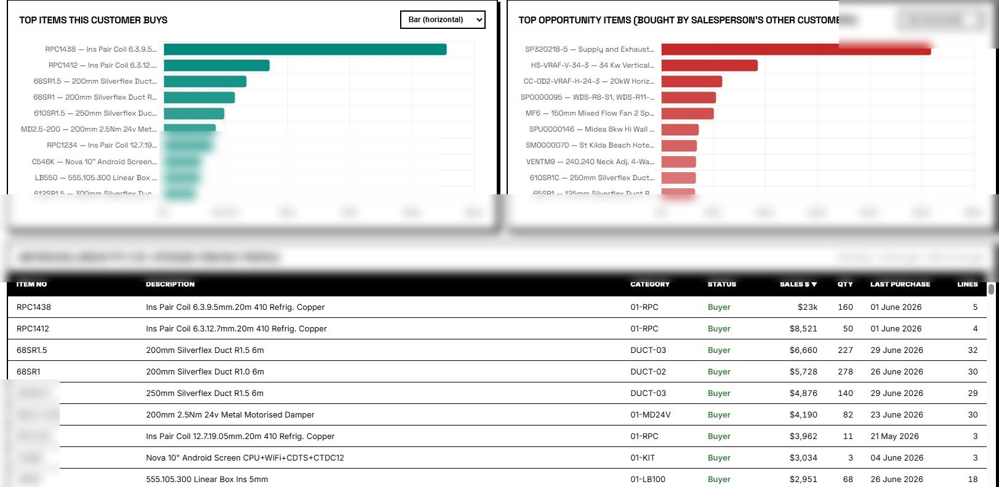
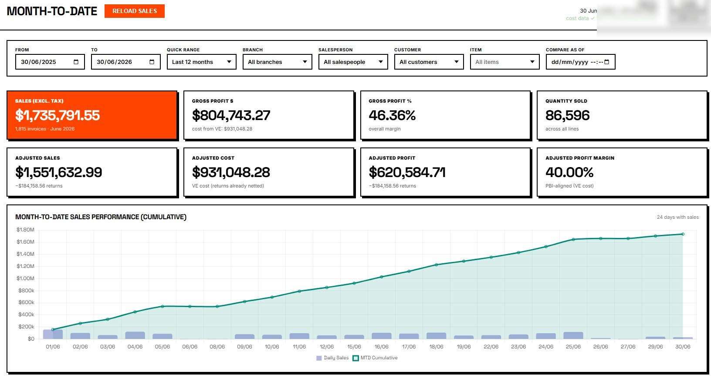

Sales Analytics Dashboard
Live executive view of the sales ledger, built directly on Microsoft Dynamics 365 Business Central via OData v4. MSAL-secured, with runtime $metadata schema discovery so the application is immune to vendor entity-name drift across upgrades. Single-tenant, free-tier deployment.
Overview
Top-line KPIs at the executive scan — sales, gross profit, margin, outstanding orders, shipped-not-invoiced, outstanding invoices — with a revenue-over-time chart split by configurable buckets.



Branch Sales
Per-branch breakdown of sales, profit, and contribution.


Salesperson Sales
Sales-rep-level performance with monthly stacked-column view and top-salespeople ranking.


Sales by Item
Item-level sales analysis — quantities, revenue, margin per SKU.


Customer × Item
Cross-tab of buyers vs non-buyers for a stocked-item universe — surfaces selling opportunity per customer.


EOM Report
End-of-month line-level detail — invoice-by-invoice GP $ and GP % with filters for low and high margin slices.

Sales Quote Overview
Outstanding quotes pipeline, conversion rates, quote-to-invoice cycle.


Sales Return Overview
Credits / returns tracking against invoiced sales.

Month-to-Date
Live MTD snapshot vs prior-month MTD comparisons.

Sales Demographics
Customer-demographic slicing of sales (segment, geography, age of relationship).

Sales Forecasting
Statistically-anchored forward forecast off live ledger history. Two method choices; configurable horizon.

Sales Pareto (80/20)
Concentration analysis — the customer/item curve and the 20% that drives 80% of revenue.


Sales Decomposition
Period-over-period change decomposed into volume, price, and mix.

Deep Insights
Exploratory analytical views — each chart answers a different question about the sales base, drawing from the same ledger as the operational KPIs.